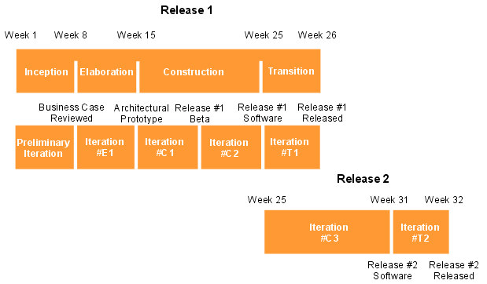

Development Case:
Project Lifecycle Model
The lifecycle adopted is that defined by the underlying Wylie College
Software Process, except from the following change :
Upon a request from some key external stakeholders, the project will produce two
software releases. The Construction of the second release will commence when the
development of the first release is ready to enter Transition. This will ensure that we are able to
incorporate the major change requests from the beta-testing of the first
software release. This means that the Construction Iteration #C3 and the
Transition Iteration #T1 will overlap in calendar time.
Below is a figure illustrating the Course Registration System Project
Lifecycle.

|